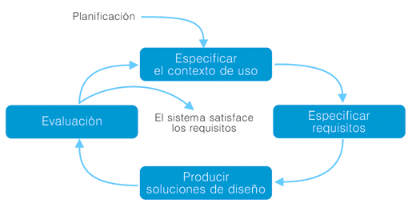

Proceso del diseño web centrado en el usuario
El DCU es un proceso cíclico en el que las decisiones de diseño están dirigidas por el usuario y los objetivos que pretende satisfacer el producto, y donde la usabilidad del diseño es evaluada de forma iterativa y mejorada incrementalmente.

De acuerdo a la norma ISO 13407, podemos desgranar este proceso en cuatro fases
1.- Entender y especificar el contexto de uso:
Identificar a las personas a las que se dirige el producto, para qué lo usarán y en qué condiciones.
2.- Especificar requisitos:
Identificar los objetivos del usuario y del proveedor del producto deberán satisfacerse.
3.- soluciones de diseño:
Esta fase se puede subdividir en diferentes etapas secuenciales, desde las primeras soluciones conceptuales hasta la solución final de diseño.
4.- Evaluación:
Es la fase más importante del proceso, en la que se validan las soluciones de diseño (el sistema satisface los requisitos) o por el contrario se detectan problemas de usabilidad, normalmente a través de test con usuarios.
5.- Necesidades del usuario
la importancia que tiene que el producto satisfaga necesidades, porque el primer paso para alcanzar una meta es tomar una dirección de salida acertada. Si la concepción de un producto no parte de las necesidades reales e intereses de sus usuarios, poco podrán aportar las siguientes etapas de desarrollo a la aceptación del producto por parte del usuario final.
De este modo estamos presuponiendo que el motor de la conducta humana son las necesidades. Con esto no obviamos, como indica Keinonen (2008), que, a pesar de este claro vínculo entre necesidades y conducta, las necesidades por sí solas no puedan explicar la conducta.
Por tanto, si son las necesidades del usuario las que motivarán (en gran parte) el uso del producto, deben ser precisamente esas necesidades las que motiven y condicionen el diseño. La forma de detectar y analizar estas necesidades es a través de la observación, investigación e indagación del usuario: la actividad, el entorno y el contexto en los que tendría lugar el uso del producto
Ponerse en la piel del usuario no es una tarea fácil. En muchas ocasiones los usuarios no serán conscientes de sus propias necesidades y tendremos que "excavar" en su actividad diaria para descubrir aquello que necesitan, aquello que sólo una vez que vean reconocerán como necesidad. En otras, nuestra implicación en el proyecto, las preocupaciones técnicas o de plazos de entrega, sesgarán nuestra visión y capacidad de empatía. Y en muchas otras es posible que terminemos confundiendo nuestros propios deseos con los de los usuarios.